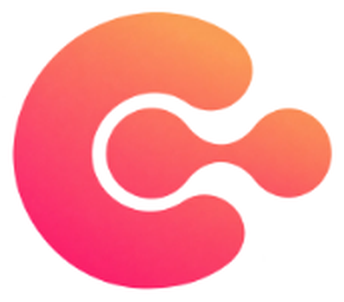

01
파이썬·데이터 분석 기초
파이썬을 바탕으로 데이터를 다루는 기초를 공부합니다. 2026년 신입 기수 활동 안내에는 Python·ADsP 스터디와 Pandas 스터디·특강, 미니 프로젝트가 연결되어 있습니다.

CODE는 경희대학교 경영대학의 데이터사이언스 학회입니다. 데이터와 인공지능을 기초부터 공부하고, 스터디와 프로젝트를 통해 학습한 내용을 적용합니다.
학습은 파이썬 기반 스터디에서 팀 프로젝트와 세미나로 이어집니다. 공식 활동 안내에는 Python·ADsP·Pandas 학습과 미니 프로젝트, 머신러닝 기초·심화 스터디가 담겨 있어 기초를 익히는 학습과 배운 내용을 적용하는 활동을 함께 살펴볼 수 있습니다.
프로젝트에서 고민한 내용을 세션에서 공유하고 서로 피드백하며, 공부한 과정은 Notion에 기록합니다. 실무자와 선배의 특강, 산학협력과 협업 활동도 함께 안내하며 데이터가 만들어낼 수 있는 가치를 탐구합니다.
파이썬을 바탕으로 데이터를 다루는 기초를 공부합니다. 2026년 신입 기수 활동 안내에는 Python·ADsP 스터디와 Pandas 스터디·특강, 미니 프로젝트가 연결되어 있습니다.
머신러닝 기초를 배우는 스터디와 프로젝트, 기존 기수를 위한 심화 학습을 안내합니다. 공식 활동표에는 머신러닝 심화와 데이터 전처리 스터디도 포함되어 있습니다.
트랙별 프로젝트로 배운 지식을 적용하고 결과와 고민을 세션에서 나눕니다. 2026년 활동 안내에는 미니 프로젝트, 자유 프로젝트, 해커톤과 산학협력 프로젝트가 담겨 있습니다.
실무자와 선배의 특강을 통해 기반 지식을 쌓고 다양한 경험을 접합니다. 함께 공부하고 성장한 과정을 Notion에 기록해 학습 자료와 포트폴리오로 활용합니다.
지원 대상과 활동 기간, 선발 방식은 기수별 모집 공고에 안내됩니다. 공식 인스타그램과 Linktree에서 새 모집 공고와 지원 안내를 확인할 수 있습니다.